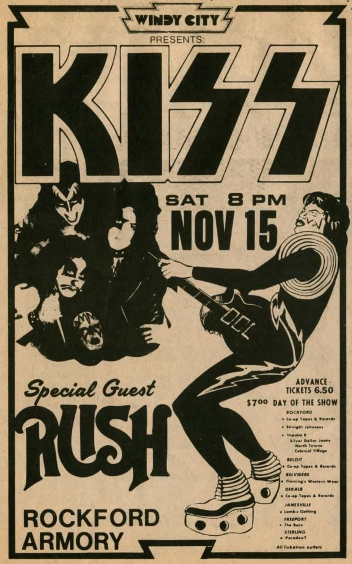

METALLICA AS A SYMBOL OF FASHION

The iconic Metallica logo has become more than just a band emblem - it's a fashion statement that dominates both high-end runways and street style. The bold, angular typography represents rebellion, power, and attitude that resonates far beyond the metal scene.
Luxury brands like Balenciaga, Fear of God, and Saint Laurent have drawn inspiration from metal aesthetics, incorporating the raw energy of band logos into their collections. The Metallica tee has evolved from concert merchandise to a coveted luxury fashion item, worn by celebrities and fashion enthusiasts who may never have attended a metal show.
This cultural crossover demonstrates how punk and metal culture continue to influence modern fashion. Band logos have become symbols that transcend their musical origins, representing a lifestyle and attitude that appeals to a broader audience. The Metallica logo, with its sharp edges and aggressive design, embodies the defiant spirit that fashion has embraced.
Fashion editors and designers cite the authenticity of metal culture as a key reason for its enduring appeal. In a world of carefully curated images, the raw, unpolished aesthetic of metal offers something genuine and powerful.
NIRVANA LOGO IN FASHION

The Nirvana smiley face logo has become one of the most recognizable symbols in both music and fashion history. Created for the "Nevermind" era, this simple yet powerful design captures the essence of grunge - ironic, nihilistic, yet strangely cheerful.
Fashion brands from Marc Jacobs to Urban Outfitters have featured the iconic logo, making it a staple in contemporary streetwear. The yellow smiley face with X'd out eyes and a crooked smile represents the grunge generation's attitude toward mainstream culture - simultaneously mocking and embracing it.
What makes the Nirvana logo so powerful in fashion is its versatility. It works on everything from high-end designer pieces to thrift store finds, maintaining its counter-culture edge regardless of context. The logo has been reinterpreted countless times, appearing on everything from runway collections to fast fashion, yet it never loses its original punk spirit.
Young people today wear Nirvana shirts as a statement of individuality and rebellion, often without knowing the band's music. This speaks to the visual power of the logo and its ability to communicate attitude and aesthetic beyond its musical roots. The symbol has transcended its origins to become a universal sign of alternative culture.
Kurt Cobain himself was famously ambivalent about merchandising, which adds an ironic layer to the logo's commercial success. Yet this contradiction feels perfectly in line with grunge philosophy - nothing is sacred, everything is for sale, and authenticity is always questioned.
HALLOWEEN KISS RECREATIONS

Every Halloween, fans worldwide recreate the iconic KISS makeup and costumes, proving that the band's visual impact extends far beyond music. The theatrical looks - white face paint, dramatic black designs, platform boots, and leather - have become classic costume choices that span generations.
Gene Simmons' demon with blood-dripping mouth, Paul Stanley's starchild with the star over his eye, Ace Frehley's spaceman with silver designs, and Peter Criss's catman are instantly recognizable characters. These personas represent the showmanship and theatrical excess that defined 1970s rock culture and continue to inspire costume designers today.
KISS understood that rock and roll could be visual spectacle, combining music with theater, fashion, and performance art. Their influence extends to drag culture, cosplay communities, and Halloween celebrations where people embrace the opportunity to transform themselves into larger-than-life characters.
The makeup designs are surprisingly complex, requiring skill and patience to recreate accurately. Dedicated fans spend hours perfecting the looks, studying concert footage and photographs to capture every detail. Online tutorials and fan communities share techniques for achieving the perfect KISS face paint, creating a culture around the costumes themselves.
What makes KISS costumes enduringly popular is their combination of simplicity and impact. The core concept - dramatic face paint and rock star attitude - is accessible to anyone, yet offers endless opportunities for personal interpretation and creativity. This balance between iconic design and individual expression keeps the KISS aesthetic relevant decades after the band's peak.